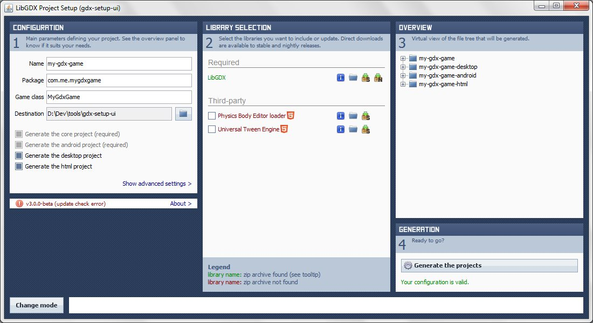

Apr 22, 2013 · 1 minute read · Comments
Games development

Ludum Dare #24 was my first game jam, an experience I found most enjoyable. Sadly, I couldn’t make it to its 25th edition. However, unless something major happens, I"m totally in for Ludum Dare #26 which will take place next weekend. Aiming at respecting tradition I shall post my arsenal of choice, unsurprisingly, they are as follow.
- Environment: Java + Eclipse.
- Libraries: libgdx & friends, maybe something from my codebase.
- Graphics: Inkscape, TexturePacker and Flash if I require animations.
- Audio: Audacity and the dodgy effects produced by sfxr.
- Others: depending on game details I could use Tiled for level design, Photoshop.
The goal is to finish a game that sucks as less as possible while retaining my mental sanity and some physical health. That means going for a jog each day and keeping the caffeine intake under control.
Keeping things short, I"ll be posting progress updates on Twitter all weekend and a proper postmortem article will follow on this very blog.
Apr 14, 2013 · 4 minute read · Comments
ComputingGames development
Open source is sometimes much more than just coding and committing to the most trendy repository at that point in time. It’s also about the community. When a piece of software grows, stops being a pet project and makes a certain impact, it is to be expected to see people flocking around it. Who knows, even other developers could start contributing via pull requests, documentation or support in your forums.
Awesome!
Indeed, but…
Well, sometimes projects can grow too much, its main developer may be trapped under a massive pile of work or simply doesn’t feel like investing so much time in it anymore, which is fair enough. However, some authors adopt quite an aggressive approach when it comes to dealing with their community and that is not so okay.
Hostile communities
Earlier this week a fellow programmer and countryman sent a pull request to Tiny Tiny RSS. Interestingly enough, that’s the Google Reader alternative I talked about less than a month ago. Sadly, he was received with rude comments and a complete lack of appreciation for his efforts. Take a couple of minutes to read through the brief conversation and judge by yourself.
I don’t want to get into the details of the pull request itself, but lets be over generous and assume my friend didn’t approach the initial problem the best way possible. Regardless of the quality of the patch, there’s no reason to drop all common courtesy except for, perhaps, enhancing, an already large ego.

Making this all about this particular case would be a bit ugly and, since there is a much obvious and better example, let’s bring it up. Linus Torvalds and the Linux Kernel! There are countless mailing list entries with serious insults coming from the controversial programmer aimed at contributors, who, in most cases, are renowned professionals. Surely he is an incredibly busy man and his project is titanic. Nevertheless, excuse me for saying that not even such situation legitimises being a dick.
It’s really not that hard to be polite
It goes without saying that a much better response for these situations be something like what follows.
Thanks for the pull request! However, I believe X is not an optimal solution cause of Y. If you could rework it and update the commit later, that"d be ace. Otherwise, we"ll try to address the underlying issue as soon as possible.
Even this is fine.
Sorry it took so long to review this. I"m sorry, I can’t accept this patch because of Y. This topic has already been discussed in the forums, please query the search tool before tackling a problem in the future. I"m too busy to fix this myself, feel free to try again.
See? That wasn’t too hard, was it?
Obviously, this guy, or anyone for that matter, can do whatever he pleases. The matter of whether his community would prosper under this environment or not, is a whole different story. I would imagine, a minority of them just don’t give a monkey’s. Ultimately, I guess some people are simply difficult to deal with. However, if you want to work in a community, I think it’s good to be aware of good practises, generally common sense and politeness work.
Healthy communities
Fortunately, there are plenty of cheerful and healthy communities. Some more than others, but my point is that they exist. I can’t say my experience with crowd powered open source development is great but I’ve been involved in a couple projects. As some of you may know, one of them is libgdx.
Libgdx’s forums, IRC channel and Github repository are full of friendly folks. As opposed to the previous examples, I’ve never seen a poisonous comment nor an insult. Actually it’s quite the opposite, for instance, all pull requests are nicely handled, even if they"re incorrect. People are constantly posting extensions, showcasing their work and the acid humor that floods the IRC is just brilliant.

That kind of atmosphere is truly splendid, as it encourages people to be more active. Ironically, the hazardous environment of hostile communities scare newcomers off because they think they"d be attacked as soon as they participate. Sadly, their negativity gives the open source world its current reputation of being swarmed by nerds with gigantic egos.
So what’s the moral of this story?
Don’t be a grumpy person, don’t be a dick, be nice to people. Also, on a side note, don’t let an unhealthy community knock down your morale.
Apr 11, 2013 · 6 minute read · Comments
Games development
As of today, I truly believe libgdx to be the best open source cross platform games framework when it comes to 2D. As if desktop, Android and iOS were not enough, it also comes with a WebGL backend. Luckily enough, this does not force you to maintain a Javascript version of your game code. Instead, it relies on Google Web Toolkit (GWT), which translates your Java project into optimized, obfuscated Javascript code.
OMG. How does this work?
Black, arcane magic. I would presume it sacrifices a dozen virgins during the third full moon of the year to make it happen. Just don’t ask.
Considerable win? Yes. Silver bullet? No.
This is utterly awesome for obvious reasons. Only, an insignificant amount of extra code is needed for your games to be fully playable from any WebGL browser without requiring any extra plugins. Take that Flash, Unity and the like!
However, as they say, not everything that glitters is gold. GWT doesn’t support every Java feature and this could potentially be a deal breaker depending on your existing codebase. Moreover, you could get unlucky and find out that the library that was about to make your life so much easier is not GWT friendly. Damn!
Last weekend, I was doing some work with libgdx that absolutely required browser compatibility. I happened to need a way of automatically placing tree nodes on a 2D surface. A smile was drawn on my face when I found the sexy treelayout library. Of course, it couldn’t be that easy, there’s no joy in victory when it hasn’t been preceded by some pain. I had to adapt it to the GWT build process and fix a few compatibility issues.
If anything, this made me realise that including new Java libraries in your WebGL libgdx game is not so straightforward. Hence, this small survival guide.
If you"re lucky, Setup UI
Chances are, you’ve setted up your project using the magnificent Setup UI tool. Aurelien Ribon’s free tool automatically creates cross platform libgdx Eclipse projects, including the libraries you want. Even though it has a system to add optional third party libraries, only a couple of them are available at the minute.

Long story short. As long as that external library you want is either Universal Tween Engine or Physics Body Editor loader, you"re good. Otherwise, read on, as you might have some work down the road. Hopefully, this situation will change in the future.
GWT build process 101
Bare in mind this is a guide so you can fix your library problem and move on, those who seek a proper explanation, I"d recommend the official documentation.
Let’s get going! You will find a very special file named GwtDefinition.gwt.xml under the main package folder in the HTML5 project. It"ll look something like this.
<?xml version="1.0" encoding="UTF-8" standalone="no"?>
<module>
<entry-point class="com.siondream.mygame.client.GwtLauncher"/>
<set-configuration-property name="gdx.assetpath" value="../tranches-android/assets"/>
<inherits name="MyGame"/>
<inherits name="aurelienribon.tweenengine"/>
<inherits name="com.badlogic.gdx.backends.gdx_backends_gwt"/>
</module>
Its main purpose is to tell the GTW compiler what modules the application depends on, and therefore, inherits from. As you can see, it’s also used to specify the entry point class and add configuration params such as the assets folder location. I’ve obviously made MyGame module up, this would correspond to your core project. Look under the src folder of your core project and you should find a MyGame.gwt.xml file.
<?xml version="1.0" encoding="UTF-8"?>
<!DOCTYPE module PUBLIC "-//Google Inc.//DTD Google Web Toolkit trunk//EN" "http://google-web-toolkit.googlecode.com/svn/trunk/distro-source/core/src/gwt-module.dtd">
<module>
<source path="com/siondream/mygame" />
</module>
As you can see, the MyGame module contains a single source path which is located under the com.siondream.mygame package. If you wanted, you could add more source path entries in this file as long as they point to packages under the same project.
Now you"re a GWT expert, right?
Integrating a third party library
It’s not hard to guess what you need to add an external library to your GWT build process. You’ve guessed right, it’s necessary to add a new module inheritance entry in your GwtDefinitions.xml file that points to a module file, which in turn, points to where the source code is.
Does that mean that I can’t get away with just adding a third party jar to the build path?
Exactly. This is a bit of a downside because it requires you to import the whole library source into your workspace, and that means you need to be able to access the source in the first place.
Crap!
Well, it’s actually not too bad. In my particular case, I went to the treelayout Google Code repository, checked out the source using Tortoise SVN and imported the project, easy peasy. The next step would be to add a module definition file under the src folder in the treelayout project, let’s name it TreeLayout.gwt.xml.
<?xml version="1.0" encoding="UTF-8"?>
<!DOCTYPE module PUBLIC "-//Google Inc.//DTD Google Web Toolkit trunk//EN" "http://google-web-toolkit.googlecode.com/svn/trunk/distro-source/core/src/gwt-module.dtd">
<module>
<source path="org/abego/treelayout" />
</module>
Hang on, we"re almost there! Finally, add the inheritance entry to the GwtDefinitions.xml file.
<?xml version="1.0" encoding="UTF-8" standalone="no"?>
<module>
<entry-point class="com.siondream.tranches.client.GwtLauncher"/>
<set-configuration-property name="gdx.assetpath" value="../tranches-android/assets"/>
<inherits name="MyGame"/>
<inherits name="TreeLayout"/>
<inherits name="aurelienribon.tweenengine"/>
<inherits name="com.badlogic.gdx.backends.gdx_backends_gwt"/>
</module>
Done! If you take 10 minutes to offer some prayers to $deity and press GWT everything should just work.
Note: after someone saying, “it just should just work”, I’ve come to realise that such situation is hardly ever the case.
Errors, expect them
Before carrying on with this section, I would always recommend to add these options to the GWT compiler.
-optimize 9 -strict
Optimize speaks for itself but strict means that the build process will bail out as soon as it encounters an error, rather than trying to keep going.
As long as you’ve followed the process, your library should be detected by the GWT compiler. However, like I’ve said before, GWT doesn’t support every Java feature. Every time you use an unsupported class or method you"ll get an error that looks like the following one.
[ERROR] Line 84: No source code is available for type java.util.Formatter; did you forget to inherit a required module?
This is going to hurt, isn’t it?
Again, GWT is not a silver bullet but it generally does a pretty good job. To tackle these issues you could try replacing every problematic class usage or method call by an equivalent, or an alternative of your own. Fear not, most Java stuff is there, the common troublesome areas I’ve come across are reflection, AWT and String.format().
Off you go
These steps helped me with treelayout integration and I hope they can aid you too. In my case I had to go through them all as the library used unsupported features. We"re done here, feel free to comment with your own experiences. Also, if you find any errors in the text, please point it out so it can be promptly fixed.
Apr 1, 2013 · 2 minute read · Comments
General

A few weeks ago I was contacted by an former professor at Kingston University asking whether I was interested in delivering a talk next on next Monday, April the 8th. An offer I gladly accepted.
Who would have thought, huh?
How come? You might ask. Well, just over a year and a half ago I arrived into Kingston, a little posh south west London borough, as an Erasmus student with the prospect of continuing my MSc in Computing Science. Leaving the crazy international student experience aside, which I got plenty of, the fact that Kingston offered a games course seemed highly appealing. Not to mention that the UK has the third biggest games industry in the world.
Coming from southern Spain, where the games industry is effectively non existent, this had life changing potential.
Oh boy, it really did!

Barely three months later, I got a job as a junior programmer at the Nottingham based Crytek studio. I didn’t start until February though, when the semester was over and the coursework was delivered. As some of you may already know, I"m currently part of the Homefront 2 AI team, which is utterly brilliant.
I cannot express how much I’ve learned during the little time I’ve been in the games industry working at a triple A studio. However, I"ll do my best next Monday. I"ll be talking about how is to be a programmer at Crytek like and how the hell I ended up where I am today. Something like a v2.0 of what I delivered in my home university last November. As you can imagine, going back to where these exciting times started is great and I"m looking forward to it.
Obviously, work on my side projects has been affected by the preparation for this talk. Activity on them shall promptly resume!
Mar 24, 2013 · 4 minute read · Comments
General
As all of you surely know, Google Reader is in death row and will be part of history as of June the 1st.
Booh!
Google Reader’s demise
As usual, the people from the Internet went bananas, so I took the time to film one of them.
Google is evil, they"re fucking us over and so on and so forth. However, the sad truth is, they just wanted to know what you"re interested in so they could provide you with more meaningful advertisement. That’s their business after all. You could argue that Reader didn’t have any of that, but Google is a massive collection of services that share a common knowledge base. Presumably, RSS had stopped being such a good way of getting to know what someone likes, social media does that now.
Besides, let’s face it, people who access the news the way we do are a tiny minority.
Looking for alternatives: Netvibes and Feedly
So it was time to look for alternatives, I wasn’t asking for much.
- Control of what I read: none of that, hey we"ll figure out what you like bullshit.
- Simple but usable UI: show me my categories and a way of quickly going through the items in a given category, marking them as read as we go along.
- Cross platform: good syncing back and forth between mobile and desktop.
- Offline reading: call me old school, but I"d like to access my stuff in the most remote of places.
- Kind with my data: after spending some time setting everything up and tidying my feeds, I"d like to be able to pack and take my stuff somewhere else. OPML does it well.
- Light weight: having a super fancy UI is pointless if the application makes your device crawl and cry for help.
Okay, maybe I was asking for too much, kill me.
During the past week there’s been an avalanche of “Alternatives to Google Reader” posts.
What the hell dude? This is one of them!
Fair enough, but the truth is, I’ve been following them and they tend to derive people to services like Netvibes or Feedly. Both have seen their user base increase dramatically, to the point of having availability problems. To be completely fair, there’s nothing deeply wrong with neither of them. Actually, I’ve used Feedly for a few days and it’s quite nice, I was even going to stick with it. However, all these were too heavy on the browser. I took a look at The Old Reader whose browser version is very nice but it lacks a phone one.

At the end of the day, all of them could shut the whole thing down any time putting me in the same uncomfortable position. First world problems.
I needed to take control.
Then I discovered Tiny Tiny RSS, a full blown free and open source RSS reader application that you can install in your own hosting. Check its website, you"ll see it pretty much has every feature you could ask for. It’s simple, multi language, multi user and comes with an open source (paid but inexpensive) Android app. It even has plugin and theme support.
Sweet!

Alright, I know not everyone has a hosting of his/her own, although, like I said earlier, people who still go for RSS feeds are a minority anyway, and they tend to be in the blogging world. I don’t believe the two sets to be mutually exclusive.
Install & config guide
The documentation is good enough but to make things even simpler, I’ve written these few simple steps down.
- Download the latest version
- Upload it to your server, use FTP, SCP or whatever you prefer.
- Create a database for tt-rss. It can be either MySQL or PostgreSQL.
- Install the SQL schema into your newly created database.
[tt-rss]/schema/ttrss_schema_mysql.sql
[tt-rss]/schema/trss_schema_pgsql.sql
- Copy
[tt-rss]/config.php-dist to [tt-rss]/config.php.
- Go through the file and set the options to match your server. These are the most common ones.
define('DB_TYPE', "mysql"); // or mysql
define('DB_HOST', "localhost");
define('DB_USER', "******");
define('DB_NAME', "******");
define('DB_PASS', "******");
define('SELF_URL_PATH', 'http://[yoursite]/tt-rss/');
define('SINGLE_USER_MODE', false);
- Add this to your server cron to schedule feeds updates with the frequency you prefer.
/usr/bin/wget --quiet --output-document=/dev/null "http://[your-tt-rss-url]/backend.php?op=globalUpdateFeeds&daemon=1"
- Login with
<admin>/` and immediately change your password you fool!
Enjoy!
The Android version has a trial build and connecting it with your Tiny Tiny RSS instance is dead easy. Type in your URL, username and password. Just make sure you have the external clients option enabled in your settings panel within the webapp.

It’s been a week since I set everything up and I couldn’t be happier. You can even enable plugins to share articles on various media, use your old Reader keyboard shortcuts or even add custom CSS to make it look a lot more like your sentenced RSS app.
Given the fact that I already had a hosting, switching to Tiny Tiny RSS was a no brainer and I love it.